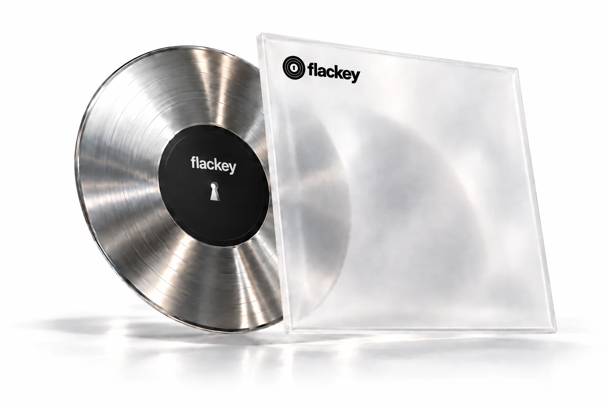

What’s new
Recently added to Flackey.
-
v0.5.0
Get the extended mix
When Flackey finds a longer extended or club mix of a track, it offers it. One click swaps it in, in the same place in your library and playlists.
-
v0.4.0
Keep it anyway
A track that fails the quality check is flagged, not thrown out. Listen to it, and if it sounds right, keep it with one click.
-
v0.4.0
Smarter searches for messy titles
Flackey reads past “FREE DL”, catalogue numbers and label tags, tries other likely readings on Soulseek, and is far less likely to pick the wrong remix or remaster.
-
v0.4.0
Report a failed download in one click
A download that went wrong has its own Report button. The app writes the email and gathers a diagnostics file. Nothing is sent until you press Send.
-
v0.3.0
Tags from Deezer and Discogs
Genre, label and year still land in your tags while Beatport can’t be reached. Flackey fills them in from Deezer and Discogs instead.
-
v0.2.2
A tidier Playlists sidebar
Search your playlists, and albums group under their own heading so they don’t bury the ones you made.
-
v0.2.2
Your folders, your way
File new tracks by artist, by date or all in one folder. Settings shows where the next one will land.
-
Built in
Updates from inside the app
Flackey tells you when a new version is out and installs it for you. Each update is checked against Flackey’s own signing key before it runs.
See it in action
Paste a link. Get the FLAC.
Or paste a whole Playlist from Spotify or YouTube.
Several versions? Hear each one before you choose.
How does it work
Paste a link.
Get the best-quality track.
-
01
Paste a link.
Add a YouTube, YouTube Music or Spotify track or playlist.
-
02
Find the best copy.
Flackey searches your connected sources for the right recording.
-
03
Download with confidence.
The audio is verified before you get it, with lossless FLAC whenever available.
See how verification works
How we verify audio
A FLAC label
isn’t proof.
Flackey looks inside every file before accepting it. A renamed or upscaled track doesn’t pass just because its filename says FLAC.
-
01
Confirm the recording.
Flackey compares the fingerprint of your link’s own audio (or a 30-second preview of the matched record) with the downloaded file to make sure it’s the same track and version.
-
02
Check it’s really lossless.
Flackey listens for the signs a lossy file leaves behind, even after it has been converted back to FLAC.
How the lossless check works -
03
Enforce the quality floor.
MP3s below 320 kbps are passed over while Flackey looks for lossless or a real 320 kbps copy. A file that fails the check is flagged, not thrown out. If it sounds right to you, Keep it anyway files it, marked as unverified.
The lossless check
Lossless means lossless.
We check.
A lot of “FLAC” files on file-sharing networks are really MP3s someone converted and renamed. Bigger file, same quality. Flackey listens to every download before it reaches your library.
-
01
Looks for the missing top end.
Converting to MP3 usually cuts off the highest frequencies. Flackey checks that the sound reaches all the way up, like a real master.
-
02
Looks for the compression fingerprint.
MP3, AAC and Opus each simplify sound in their own way, leaving a regular pattern that survives conversion back to FLAC. Flackey looks for it across the whole track, skipping any moment pushed past full volume, where clipping can hide it.
-
03
Gives you an honest answer.
Every download gets one of three verdicts, and the app shows you which one, and why.
- Top end
- Compression fingerprint (MP3, AAC, Opus)
What it’s looking for
Top end. Most lossy files lose it: above a certain line, there’s nothing at all.
Compression fingerprint. MP3 and AAC round sound off to coarse steps. What’s left sits on a regular grid that real recordings don’t land on, and converting to FLAC doesn’t undo it.
Opus leaves a fingerprint of its own, in how it stores the sound of each frequency band.
-
Verified
No sign of a lossy source. Filed and tagged as verified.
-
Unverified
No proof it’s fake, no proof it’s real. Still saved and tagged as unverified, and the app tells you why.
-
Rejected
Clear signs of a converted file. Flackey keeps a copy so you can listen, and keep it anyway if it sounds right.
Flackey never deletes a file just because it’s unsure.
How it works, in detail
Two signs, one pass
Flackey decodes each download once, start to finish, and looks for both signs on that one pass: a missing top end, and the compression fingerprint of MP3, AAC or Opus.
- Top end
- The highest frequency the music reaches across the whole track. Lossy encoders throw the top away to save space, so the sound stops at a flat ceiling. A real master usually fades out gradually instead, with sound still reaching past where it fades.
- Compression fingerprint: MP3 and AAC
- These formats cut sound into short frames and round each frame’s frequencies to coarse steps. Flackey repeats the cut at every possible frame position. At the encoder’s own position the values fall back onto its grid, with far less rounding error than real audio gives. This check ignores the top end, so it can catch a high-bitrate copy that reaches all the way up.
- Compression fingerprint: Opus
- Opus stores the shape of each frequency band as a pattern of whole-number pulses. Flackey checks whether the audio lines up with that pattern at one frame position, which genuine audio has no reason to do.
Avoiding false alarms
- It skips moments pushed past full volume. A master clipped hard can look like a faint grid in exactly those moments.
- It looks across the whole track. A fingerprint has to run through it, not show up in one spot: a fingerprint in only part of a track, like an MP3 sample inside a real production, gives Unverified, not Rejected.
- A fingerprint has to clearly beat chance. The best frame position is weighed against all the others, and a narrow lead counts as a faint sign, not proof.
- One unclear sign is never enough on its own. A master that simply stops a little short of the top gets Unverified, unless a fingerprint agrees with it.
What happens to the file
- Verified
- No check found a sign of a lossy source. Filed and tagged as verified.
- Unverified
- One unclear sign, a fingerprint in part of the track, or too little sound to judge. Filed and tagged as unverified, and the app shows the reason.
- Rejected
- A hard ceiling on the top end, a strong fingerprint through much of the track, or an unclear ceiling and a fingerprint that agree. It isn’t filed as lossless. In most cases Flackey holds on to the refused copy so you can listen, and Keep it anyway files it, marked as unverified.
Nothing is deleted because Flackey is unsure.
Credit and limits
The MP3 and AAC checks are ported from Olivier Derrien’s True-lossless Audio Detector (CNRS/PRISM, Marseille), open source under the MIT License.
No check can prove a file is lossless. It can only find evidence that it isn’t. A well-hidden lossy source can still pass, and an unusual master can still come out Unverified. When the evidence is unclear, Flackey says so instead of guessing.
About Flackey
We didn’t reinvent music sharing.
We made it easier.
Flackey is powered by Soulseek, an independent, community-powered network where music lovers share rare and high-quality recordings directly with one another. Flackey takes part in that exchange by sharing your downloaded tracks back with the network. When a lossless copy isn’t available, it falls back to a verified 320 kbps MP3 from Deezer.
We didn’t invent the wheel—we’re making these great sources more accessible. Flackey will grow around what its users actually ask for.
Explore the projectHelp shape Flackey
Found a problem?
Tell us in plain language.
You don’t need to be a developer. Choose what you want to share and GitHub will guide you through a short form. Or use Report a bug inside the app: it writes the email and saves a diagnostics file for you to drag in. Nothing is sent until you press Send.
Release notes
What shipped, and when.
The latest release, straight from its GitHub notes. The full history is on GitHub.
Loading release notes… They’re also on GitHub releases.
Get the best quality available.
Share it back.
The latest release, straight from GitHub.
Flackey is a desktop app for Mac and Windows. Open this page on your computer to download it, or pick one above to read how it installs.
Apple Silicon only (M1 or newer) · macOS 12 or newer
Intel Macs are not supported.
The installer isn’t signed with an Apple certificate, so macOS warns you once. Here’s the 30-second fix. SHA-256 checksum
Please read Installing on a Mac
- Download and open Flackey.pkg.
- macOS will block it the first time — see below. This is expected.
- Follow the macOS Installer steps. Flackey is placed in Applications.
- Open Flackey and connect Telegram, Soulseek, or both.
macOS will say it can’t verify Flackey
Flackey isn’t notarized yet, which needs a paid Apple Developer account. macOS blocks anything unnotarized by default, so you’ll see this the first time you open the installer:
Then allow it once:
- Open System Settings → Privacy & Security, and scroll down to Security.
- Next to “Flackey.pkg was blocked to protect your Mac,” click Open Anyway.
- Authenticate with Touch ID or your password.
- Click Open Anyway once more when the warning comes back. The installer then runs normally.
If you don’t see an “Open Anyway” button, it has expired — it only appears for about an hour after macOS blocks something. Double-click Flackey.pkg again, click Done, and go straight back to Privacy & Security.
On macOS 14 and earlier you could control-click the installer and choose Open. macOS 15 removed that, so Privacy & Security is now the only route.
Rather not take our word for it? Flackey is open source — you can read the code and build it yourself.
Windows 10 or 11 · 64-bit PC
The installer isn’t signed with a Microsoft certificate, so Windows warns you once. Here’s the 30-second fix. SHA-256 checksum
Please read Installing on Windows
- Download and open Flackey-Setup.exe.
- Windows will warn you the first time — see below. This is expected.
- Follow the setup steps. Flackey installs for your account only, so no administrator password is needed.
- Open Flackey and connect Telegram, Soulseek, or both. When Windows Firewall asks about slskd (Flackey’s Soulseek client), click Allow so others can download what you share.
Windows will say it protected your PC
Flackey isn’t code-signed yet, so Microsoft Defender SmartScreen doesn’t recognise it and shows this the first time you open the installer:
- Click More info.
- Check that it names Flackey-Setup.exe, then click Run anyway. Setup then runs normally.
If your browser says the file isn’t commonly downloaded, open the download’s … menu and choose Keep.
Windows on Arm PCs run Flackey too, through Windows’ own emulation; expect it to be slower.
Rather not take our word for it? Flackey is open source — you can read the code and build it yourself.